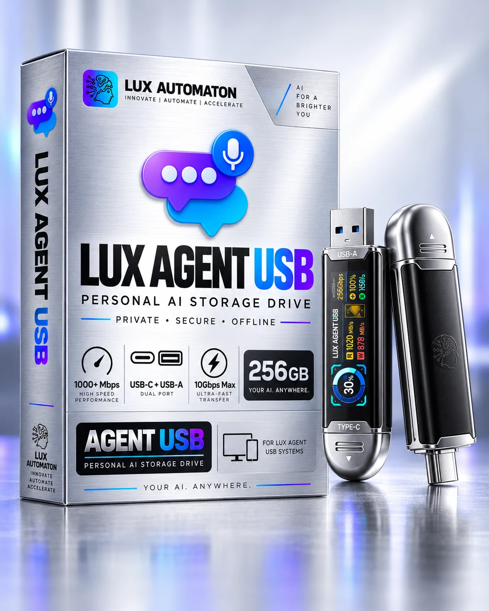
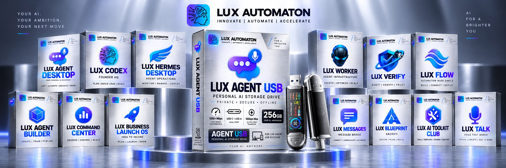
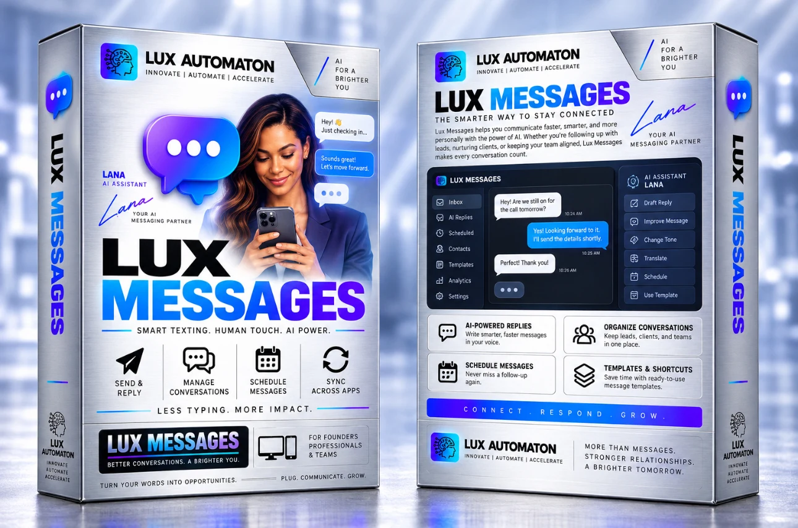
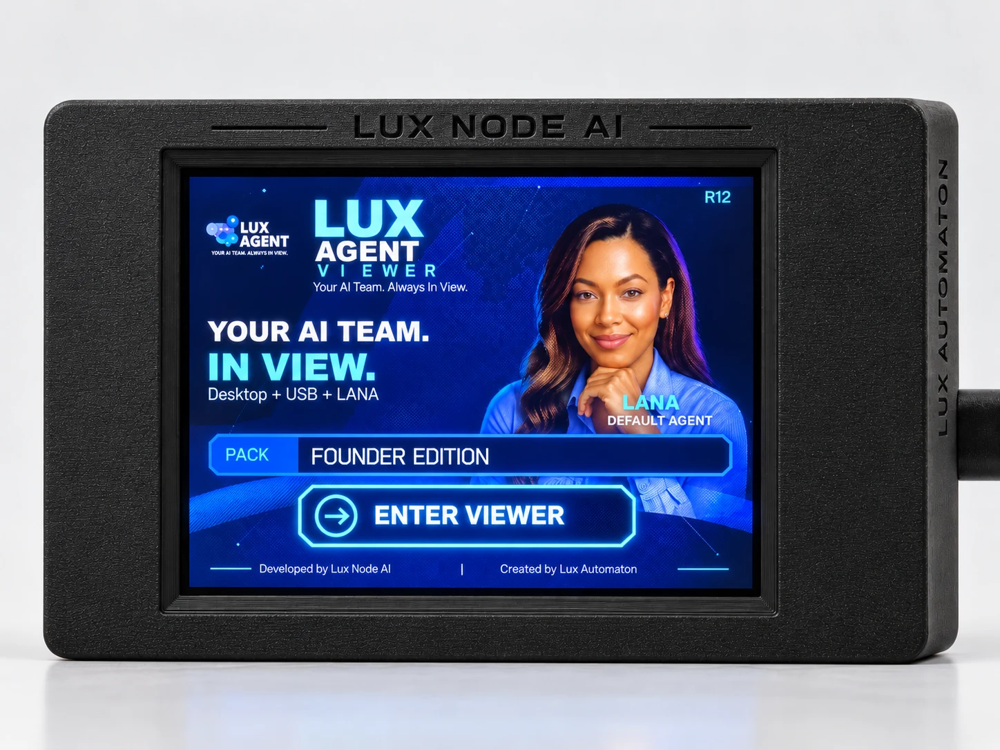

Lux Verify gate
New public Kit Creator packs are blocked from Store publishing until required quality and verification evidence passes.
Meet Lux Agent USB. Your files, tools, and next big idea—together in a compact companion that goes where you do.

LUX AGENT USB / PORTABLE COLLECTIONStart with one device. Explore workspaces, tools, and creative kits that bring the Lux experience together.
Meet the ecosystem ↗
A little help from LANA. A more personal conversation.
Discover Lux Messages ↗
Explore a workspace for shaping your own AI agents.
Explore Agent Builder ↗A compact companion for status, conversations, approvals and the moments when you want LANA close without opening your whole workspace.
Explore Viewer ↗
New public Kit Creator packs are blocked from Store publishing until required quality and verification evidence passes.
Lux is designed to show what the agent plans and did, keeping important decisions with the person using it.
Core Lux workflows can use local tools and models when configured, with cloud services added deliberately.
The public Store is published from versioned Git history and managed through Lux Codex.


Prompt Kits package useful prompts, skills, scripts, templates and workflows into something you can actually use with LANA.
See setup, compatibility, Store status and purchasing answers in the Lux Help Center.
Open Help Center ↗The public Store is live for browsing. Payment and fulfillment stay disabled until pricing, terms and delivery are commissioned.
New public Kit Creator packs must clear the Lux quality and Verify publishing gate before they can be synced to the Store.
Customers use Lux Agent Desktop. Lux Codex is the private founder control plane for Store publishing and product operations.